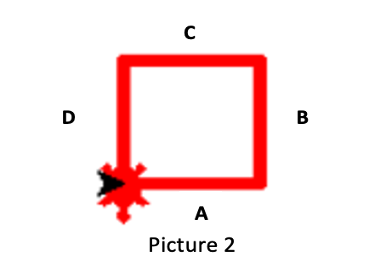

3. Let's get familiar with turtle
This level aims to help to children to get familiar with python. This level will contain 2 parts: warm up and draw a square.
Here is the video to better demonstrate how turtle work
In the previous chapter, you have been familiar with setting the turtle up.
| Purpose | Command |
|---|---|
| Import Python turtle graphic. | import turtle |
| Create a name for your turtle. | name = turtle.Turtle() |
| Choosing a shape.
if you skip the command choosing a shape for your turtle then your turtle shape will automatically be an arrow. |
name.shape(‘shape’)
You have to replace ‘shape’ by one of these shapes: arrow, circle, square, triangle or turtle. |
| Choosing a color
if you skip the command choosing a color for your turtle then your turtle color will automatically be black. |
name.color(‘color’)
You have to replace ‘color’ by the color that you wish to. |
| Setting a default location to (0,0) | name.goto(0,0) |
Part 1: Warm up!! Draw a line by using your own turtle.
- Firstly, you need to set up your turtle just like what you did in the setting up part. Including:
- Set up your turtle name.
- In order to draw a line, please choose a direction for the line:
- If you want your turtle to draw a line from its default position, please follow the step below:
- Since you don’t want the turtle to turn and you just want to draw a line from its default position, so you just need to write out a command to make the turtle goes forward: name.forward(“steps”).
- For example, if your turtle name is “car” and you would like your turtle to go forward for 100 steps then your command must be: car.forward(100)
- If you want to draw a slant line, then you can turn your turtle to either the right or the left and then you can draw your own line. You can follow the steps below:
- Ways to turn your turtle:
- In order to turn your turtle to the right, you must write in the command: name.right(degrees).
- For example, if your turtle name is “car” and you want to turn your turtle to the right for 90 degrees then your command must be: car.right(90).
- In order to turn your turtle to the left, you must write in the command: name.left(degrees).
- 1. For example, if your turtle name is “car” and you want to turn your turtle to the left for 90 degrees then your command must be: car.left(90).
- After turning your turtle to a specific direction, you can now write your command to make the turtle go forward by a number of steps by using the command to draw a line: name.forward(steps).
Notice that steps and degrees can either be decimal or integer.
NOW PLEASE
DRAW THE LINE BY YOURSELF !
# This solution will draw a vertical line with length of 100.
sol = turtle.Turtle()
sol.shape("turtle")
sol.color("blue")
sol.left(90)
sol.forward(100)
sol = turtle.Turtle()
sol.shape("turtle")
sol.color("blue")
sol.left(90)
sol.forward(100)
from browser import document
import turtle
turtle.set_defaults(
turtle_canvas_wrapper = document['turtle-div'])
# DO NOT DELETE ABOVE THIS LINE
######## Write your code below
name = turtle.Turtle()
name.shape("turtle")
name.color("red")
# DO NOT DELETE BELOW THIS LINE
turtle.done()
Part 2: Draw a square
The instruction below is the fastest way to draw a square. You can implement the square by using your own way.Notice
- You will always have a turtle locates at the default direction since you have set it at position (0,0). In order to help you to get familiar with Turtle programming, the square that you draw must be the same as the square in the picture above. In other words, after finishing drawing a square, the turtle must face to the South direction.
- Each side of the square has been annotated with the corresponding letter A, B, C, D. The instrcution below will guide children how to draw those lines in the easiest way. 
- The black arrow is the default location and direction of your turtle. The red turtle is the final direction and location of your turtle.
Here are some syntax that important for this part. After finishing this level, children should be comfortable with these most command:
| Purpose | Command |
|---|---|
| Make the turtle goes forward in the current direction. | turtle.forward(steps) |
| Turns the turtle to the left direction in number degrees. | turtle.left(degrees) |
| Turns the turtle to the right direction in number degrees. | turtle.right(degrees) |
| Pointing a variable to an object. | variable = object The object can be in any type: integer, decimal, list, etc. |
Here are the steps
- Firstly, you need to set up your turtle just like what you did in the setting up part. Including:
- Set up your turtle name.
- Choose a shape for your turtle.
- Set up turtle defaul location to (0,0).
- Set up turtle color to the color that you like.
- Pick a lengh for all the egdes of your square by using the command: variable = object.
- 1. For example: if you want your square edges to have length 90, the your command could be: length= 90. This command point the langth variable to 90, so whenever you access to the length, it will always equal to 90.
- Draw line A:
- From the position of the black the arrow, you can know that in order to draw line A, you just have to make the turtle go forward.
- The command that will make the turtle to go forward is given in the table, which is: turtle.forward(steps). In the command line, ‘turtle’ must be replaced by your turtle name, the name you have set up for your turtle in step 1. You must also replace the “steps” with an integer or a decimal, which is the length of your square egdes that you have set up in step 1. There are 2 ways to write this command:
- For example: if you have set up your length = 90, your turtle name is ‘car’ then your command should be: car.forward(90). This is anormal to wirte this command.
- For example: if you have set up your length = 90, your turtle name is ‘car’ then your command can be: car.forward(length). In this way, you are accessing to the number 90 through the variable length, because length variable points to the number 90.
- Draw line B:
- Turn your turtle to the left in an angle of 90 degrees in order to create the first 90 degrees angle of the square. The command that you will use to turn the turtle’s angle for 90 degrees to the left is provided above: turtle.left(90). You will have to change ‘turtle’ in the command to your turtle name, which you have set up in step 1.
- For example, if your turtle name is ‘car’ and you want your turtle turn to the left for 30 degrees, then your command should be: car.left(30).
- After turning your turtle to the left for 90 degrees, you will now write a command to make the turtle go forward just like in step 2.
- Draw line C:
- Turn your turtle to the left again for 90 degrees. Type in your command just like what you have for line B.
- After changing the turtle’s direction, please make the turtle go forward to draw out line C. You can simply repeat the forward command in step 2 and 3.
- Draw line D:
- Turn your turtle to the left again for 90 degrees. Type in your command just like what you have for line B and C.
- After changing the turtle’s direction, please make the turtle go forward to draw out line D. You can simply repeat the forward command in step 2, 3 and 4.
NOW PLEASE
DRAW THE SQUARE BY YOURSELF !
# This solution will draw a vertical line with length of 100.
sol = turtle.Turtle()
sol.shape("turtle")
sol.color("blue")
sol.forward(100)
sol.left(90)
sol.forward(100)
sol.left(90)
sol.forward(100)
sol.left(90)
sol.forward(100)
sol = turtle.Turtle()
sol.shape("turtle")
sol.color("blue")
sol.forward(100)
sol.left(90)
sol.forward(100)
sol.left(90)
sol.forward(100)
sol.left(90)
sol.forward(100)
from browser import document
import turtle
turtle.set_defaults(
turtle_canvas_wrapper = document['turtle-div1'])
# DO NOT DELETE ABOVE THIS LINE
######## Write your code below
name = turtle.Turtle()
name.shape("turtle")
name.color("red")
# DO NOT DELETE BELOW THIS LINE
turtle.done()